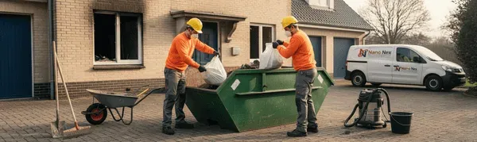

¿Por Qué Las Naves Industriales Necesitan Limpieza Especializada?
Las naves industriales no son como oficinas normales. Meses de polvo, residuos de maquinaria, posibles contaminantes químicos y acumulación de grasa. Todo esto reduce eficiencia, causa problemas de seguridad laboral y puede incumplir normativas. Una nave sucia no es solo un problema estético: es un riesgo operativo.
Problemas Comunes en Naves Industriales
❌ Polvo y suciedad acumulada
Meses de polvo en maquinaria reduce eficiencia, causa paros imprevistos y afecta a la calidad del producto. Lo eliminamos completamente sin dañar equipamiento.
❌ Contaminación química y residuos
Talleres mecánicos, plantas químicas y fábricas dejan residuos tóxicos. Requieren expertos para eliminar sin riesgo. Cumplimos todas las normativas de residuos peligrosos.
❌ Paros de producción no deseados
Necesitas limpieza sin parar máquinas. Planificamos intervenciones nocturnas o en horarios bajos, flexibles según tu operación.
❌ Incumplimiento normativo
Auditorías de seguridad, inspecciones de higiene. Una nave sucia no pasa inspecciones. Nos aseguramos de que cumplas.

Nuestro Proceso de Limpieza Industrial
- Evaluación inicial (30 min): Visitamos la nave, evaluamos tamaño, tipo de contaminación y necesidades específicas.
- Planificación sin interrupciones: Creamos un plan de limpieza que no interfiera con tu producción. Horarios nocturnos o fines de semana si lo necesitas.
- Preparación y protección: Aislamos maquinaria crítica, colocamos protecciones, preparamos sistemas de gestión de residuos.
- Limpieza profesional: Equipo especializado con herramientas industriales (aspiradoras 3000W+, presión 250 bar, sistemas de desinfección).
- Verificación y control de calidad: Inspección final para asegurar que todo cumple estándares.
- Documentación certificada: Informe técnico y certificado ITEL para tus registros y auditorías.
Equipamiento Profesional Que Utilizamos
- Aspiradoras industriales de 3000W+ - Capacidad para espacios grandes y polvo pesado
- Sistemas de limpieza a presión (hasta 250 bar) - Sin dañar superficies, con precisión
- Equipos de descontaminación química - Neutralización segura de residuos tóxicos
- Sistemas HEPA de filtración - Eliminación de partículas ultrafinas
- Equipamiento de protección (EPI certificado) - Nuestro equipo está protegido contra químicos
- Gestión de residuos autorizada - Cumplimiento de normativas de peligrosos
Tipos de Naves Que Limpiamos
- Almacenes y depósitos - Limpieza de mercancía polvorenta, fumigación si necesario
- Talleres mecánicos - Eliminación de grasa, aceites, residuos metálicos
- Fábricas y plantas de producción - Limpieza alrededor de maquinaria, sin parar operación
- Centros de distribución logística - Limpieza bulk, sistemas de carga/descarga
- Naves post-incendio (especialidad) - Eliminación de hollín, desodorización profunda
- Espacios post-construcción - Eliminación de polvo de obra, escombros
- Plantas químicas y laboratorios - Descontaminación especializada, normativa REACH
Precios Orientativos para Limpieza Industrial
| Tamaño Nave | Tipo de Limpieza | Duración Estimada | Precio Orientativo |
|---|---|---|---|
| 100-500 m² | Básica (barrido profundo + fregado) | 1 día | 300-600€ |
| 500-1000 m² | Profesional (profunda + desinfección) | 2-3 días | 800-1500€ |
| 1000-5000 m² | Especializada (química + HEPA) | 4-7 días | 1500-4000€ |
| +5000 m² | Industrial integral | Según evaluación | Presupuesto personalizado |
*Precios orientativos. El presupuesto final depende de la superficie, nivel de contaminación, accesibilidad y normativa aplicable. La visita técnica es gratuita.
Certificaciones y Normativa
Cumplimos con todas las regulaciones de limpieza industrial:
- ITEL (Instituto Técnico Español de Limpieza) - Estándar de excelencia en limpieza
- ANECPLA (Asociación Nacional de Empresas de Control de Plagas) - Limpieza integrada de plagas si necesario
- ISO 9001 - Gestión de calidad certificada
- Normativa de residuos peligrosos - Cumplimiento estricto en clasificación y gestión
- Protección de datos de clientes - RGPD completo
¿Por Qué Elegir Nano Nex para Limpieza Industrial?
- ✅ 25 años de experiencia en limpieza especializada
- ✅ Equipo 100% certificado y capacitado
- ✅ Disponibilidad 24/7 incluyendo festivos
- ✅ Técnicas no invasivas que respetan tu producción
- ✅ Todas las certificaciones: ITEL, ANECPLA, ISO 9001
- ✅ Gestoría de residuos autorizada
- ✅ Presupuesto sin compromiso
- ✅ Informe técnico certificado tras intervención
Preguntas Frecuentes
¿Cuánto tiempo tarda limpiar una nave?
Depende del tamaño y estado actual. Una nave de 500 m² en condiciones normales tarda 1-2 días. Para naves muy contaminadas o de mayor tamaño, puede tardar 3-7 días. Ofrecemos horarios nocturnos o de fin de semana para no interrumpir tu operación.
¿Interrumpirá la limpieza mi producción?
No, si lo coordinas con nosotros. Trabajamos en horarios que tú elijas: noches, madrugadas, fines de semana. Nuestro equipo es flexible y se adapta a tu calendario de producción.
¿Qué certificaciones tenéis?
Somos especialistas certificados ITEL, ANECPLA e ISO 9001. Emitimos certificado de limpieza tras cada intervención, válido para auditorías de seguridad y cumplimiento normativo.
¿Gestionáis residuos peligrosos?
Sí, gestionamos residuos según clasificación legal. Trabajamos con gestores autorizados y cumplimos normativa completa de residuos peligrosos. Documentación incluida en informe final.
¿Atendéis urgencias?
Sí, equipo disponible 24/7. Para urgencias contacta al 632 107 272. Nos desplazamos en menos de 2 horas en Madrid y alrededores.
¿Necesito asegurador o presupuesto para cobrar?
La limpieza industrial es gasto operativo deducible. Emitimos factura comprobante e informe técnico para tus registros contables y auditorías.